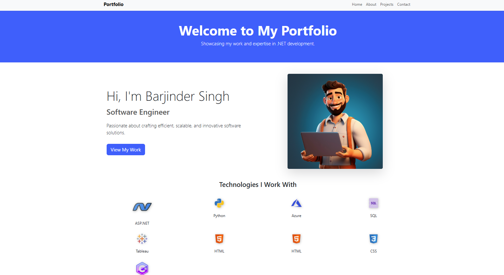

Portfolio Project - Razor Pages
Technology Used: .NET Razor Pages, SQL Server, Bootstrap
 View on GitHub
View on GitHub
Project Screenshots
Summary
This portfolio project is built using .NET Razor Pages. It showcases various skills, projects, and a dynamic structure to add, edit, and manage portfolio items efficiently. The Razor Pages model simplifies development with clean separation of concerns and a lightweight structure.
Key Features
- Responsive design for all devices
- Clean UI built with Razor Pages and Bootstrap
-
1. Create Razor Pages Project:
Start by creating a new Razor Pages project in Visual Studio using the Razor Pages template.
{% comment %} -
2. Design the Database:
Design tables to store portfolio items, including fields for title, description, images, and videos.
{% endcomment %}
-
Create Models:
Define models for PortfolioItem and other entities to interact with the database.
 {% comment %}
{% comment %}
-
4. Develop Razor Pages:
Implement Razor Pages for CRUD operations and bind data between the UI and backend logic.
-
5. Design UI:
Build user-friendly pages using Razor syntax and Bootstrap for styling.
-
6. Test and Deploy:
Thoroughly test the application, fix bugs, and deploy it to a live server for public access.
Steps to Build
Conclusion
The Razor Pages portfolio project highlights my ability to develop professional web applications with a focus on clean architecture and modern web design. It demonstrates expertise in both frontend and backend development, making it a valuable addition to my skill set.